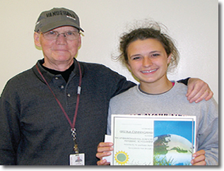

ORPSEF Myrick Donation & Scholarship
Myrick Donation & Scholarship
Tim and Teresa Myrick Support Grants Campaign and Scholarship Programs
Tim Myrick’s work as a loan executive and later a volunteer in the Oak Ridge High School renovation and rebuilding project led Tim and his wife Teresa to contribute in support of academic studies dear to his heart. The couple made a $25,000 pledge to the Foundation’s Making the Critical Difference Grants Campaign. Of that amount, $15,000 was designated for ORHS Science Department grants and $10,000 for scholarships for environmental science students. The gift provides a $1,000 scholarship to an AP environmental science student each year for 10 years. In 2013, the Science Department grant provided lab equipment and digital cameras for microscopes.
Tim’s involvement with the high school came after he guided the $350 million modernization undertaken by UT-Battelle at Oak Ridge National Laboratory in the early 2000s, as project manager for the facilities revitalization program. ORNL later offered Tim’s leadership talent to help guide the complicated $61 million high school project, and Tim was eager to help. When he retired from the lab in 2004, he continued as a volunteer consultant on the project until completed in 2008.
Noting Tim’s concerns for the environment and energy savings during rebuilding of the high school, a science teacher invited him to come in as a volunteer teacher in an AP environmental science class once a week. Tim has actively participated in the AP environmental science course at Oak Ridge High School since 2008, often giving lectures, participating in field studies or discussing ongoing environmental management projects. Noticing that teachers’ needs in the classrooms and labs were often greater than budgets provided for, and that some motivated students needed help with college expenses, he and his wife decided to make the gift to the Foundation.
2014 Myrick AP Environmental Science Scholar
Kristina Cunningham enjoyed Tuesdays in her advanced placement environmental science class, when guest lecturer Tim Myrick brought real-world examples of environmental issues into the classroom. Tim noticed Kristina’s dedication to her studies and commitment to environmental causes. He selected her to receive the 2014 $1,000 AP environmental science scholarship that he and his wife Teresa presented.
"I have a strong passion to help the earth,"" Kristina commented on her interest in environmental sciences. "We need to develop new technology to help bring change. We’re all responsible for what’s going on, but I want to help bring change."" A 2014 graduate of Oak Ridge High School, Kristina is continuing her studies in environmental engineering at Tennessee Tech University.
"I selected Kristina because from the very first month in the AP environmental science class, I could tell she was very committed to environmental causes, was a dedicated student, and was very personable," Tim said. He added that he could see that she would be an excellent college student and professional engineer and a responsible advocate for environmental issues throughout her life.